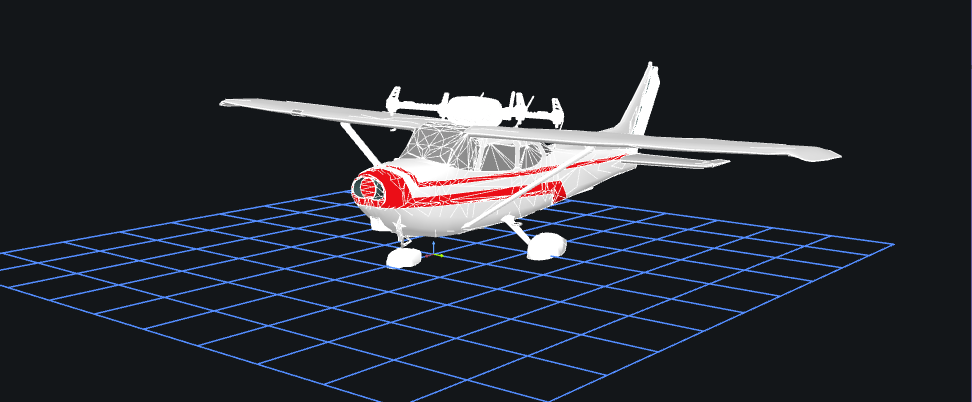

Aerial Autonomy
Autonomous Flight - Offboard Control
Building autonomous mission control for a simulated fixed-wing drone using ROS2 and PX4, progressing from basic flight commands toward automated inspection routes.
Overview
This project is built on top of a simulated autonomous fixed-wing aircraft mission, originally proposed as an undergraduate research project by a PhD researcher at Georgia Tech. This project's focus is to build a drone to provide detailed inspection of points of interest. The framing and phased structure of the mission below come from that proposal; everything in the "My Project" section past that point is my own implementation and progress.
Mission Phases
- Phase 1 — Environment Setup Complete
- Phase 2 — Arm & Loiter Complete
- Phase 3 — Automated takeoff Complete
- Phase 4 — GPS circle mission Active
- Phase 5 — Return & Land Inactive
Tech Stack
- ROS2Robot Operating System 2 (ROS2) — a middleware framework for building robotics software, providing tools for communication between different parts of a robot's system
- PX4 An open-source flight control software stack for drones and other autonomous vehicles, handling low-level stabilization and flight commands.
- MicroXRCEMicro XRCE-DDS — a lightweight communication bridge that lets resource-constrained devices (like flight controllers) talk to ROS2 using the DDS messaging standard.
- Q Grond ControlA ground control station app for planning, monitoring, and controlling drone missions in real time, compatible with PX4 and ArduPilot.
- Plot JugglerA tool for visualizing time-series data from logs or live streams, commonly used to inspect and debug robotics telemetry.
- FoxgloveA visualization and debugging platform for robotics data, letting you inspect 3D scenes, sensor feeds, and logged or live ROS data.